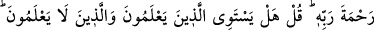
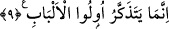
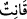

9. Yoksa geceleyin secde ederek ve kıyamda durarak ibâdet eden, âhiretten
çekinen ve Rabbinin rahmetini dileyen kimse (o inkârcı gibi) midir? (Rasûlüm!) De
ki: Hiç bilenlerle bilmeyenler bir olur mu? Doğrusu ancak akıl sâhipleri bunları
hakkıyla düşünür.
“Yoksa geceleyin” gece saatlerinde “secde ederek ve kıyamda durarak ibâdet eden,
âhiretten çekinen ve Rabbinin rahmetini” yâni bağışlamasını ve cenneti “dileyen
kimse” sâdece dünya sıkıntısından sakınan ve dünyanın hayrını isteyen “(o inkârcı gibi)
midir?”
Buradaki istifham/soru, konuyu pekiştirme mânâsınadır. Yâni katı kalpli, unutkan bir
kâfirin durumu mu daha iyi, âkıbeti daha güzeldir; yoksa geceleyin secde ederek ve
kıyamda durarak ibâdet eden, âhiretten çekinen ve Rabbinin rahmetini dileyen kimse
mi? Bilakis geceleyin secde ederek ve kıyamda durarak ibâdet eden, âhiretten çekinen
ve Rabbinin rahmetini dileyen kimse daha hayırlıdır, demektir.
Âyette bahsedilen kimse en meşhur görüşe göre Osmân b. Affân (r.a.)’tır. Onun temiz
sıfatı üzere olan herkes de bunda dâhildir.
“
” çeşitli mânâlara gelir:
1- Bunlardan birisi duâdır. Vitr namazının kunûtu, duâsıdır. “Kunût duâsı terkibindeki
izâfete gelince, Ahî Çelebî Hâşiyesi’nde geçtiği üzere bu, açıklama için olan bir
izâfettir (izâfet-i beyâniyye).
2- Kunûtun bir anlamı da “
(tâate devam eden kadınlar)” (el-Ahzâb, 33/35)
ifâdesinde olduğu gibi tâattir.
3- Kunût’un anlamlarından biri de kıyâmdır/ayakta durmaktır. Buna göre namaz kılan
kişi kânittir, yâni kıyamda/ayakta durmaktadır. ed-Dürer’de geçtiği üzere fürû’ fıkıhta,
Hz. Peygamber (a.s.)’ın “En üstün namaz kunûtü” yâni kıyâmı “uzun namazdır.”[68]
hadîsinden dolayı kıyâmı uzun yapmak çok secde etmekten evlâdır. Başka bir hadiste
şöyle buyrulmuştur: “Allah yolunda cihad eden kimsenin durumu, oruçlu olarak
namaz kılan(kânit) kimseye benzer.”[69] Nitekim Keşfü’l-esrâr’da böyle geçmektedir.
Âyetin “
” kelimesinin ardından “geceleyin” ve “secde ederek ve kıyamda
durarak” ifâdelerinin getirilmesi de kunût’ü kıyâma tahsis etmektedir.
Secdenin kıyamdan önce zikredilmesi, ibâdet mânâsını daha iyi ifâde ettiği içindir.
Buradaki secde ve kıyamdan maksad, namazdır. Bu ikisi ile namazın ifâde edilmesi,
namazın rükünlerinin en büyüklerinden olmalarından dolayıdır.
Buna göre “
”in mânâsı, namazda kıyâmı uzun tutarak ayakta duran demektir.